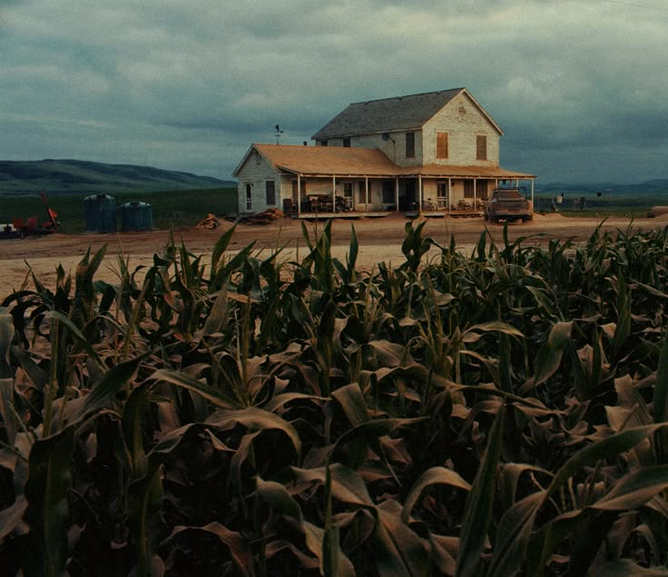
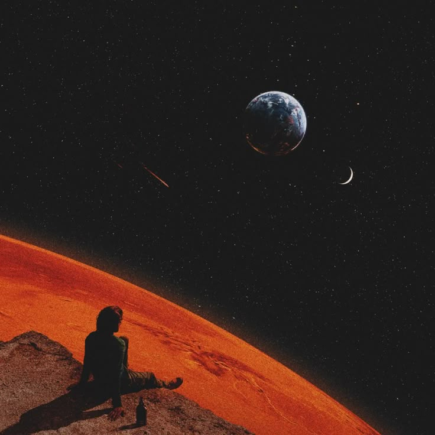
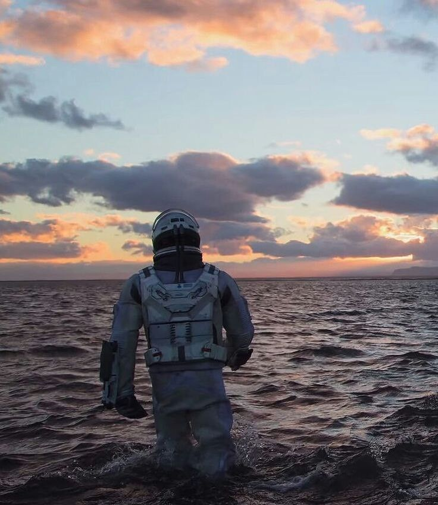
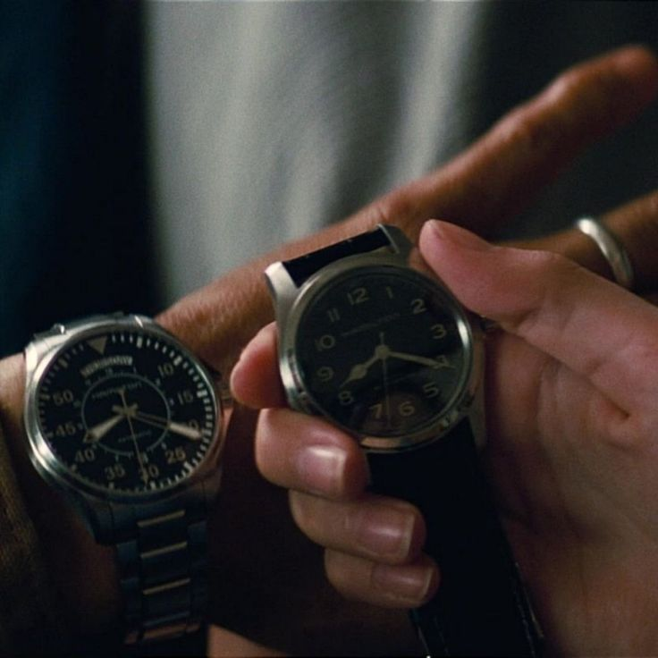
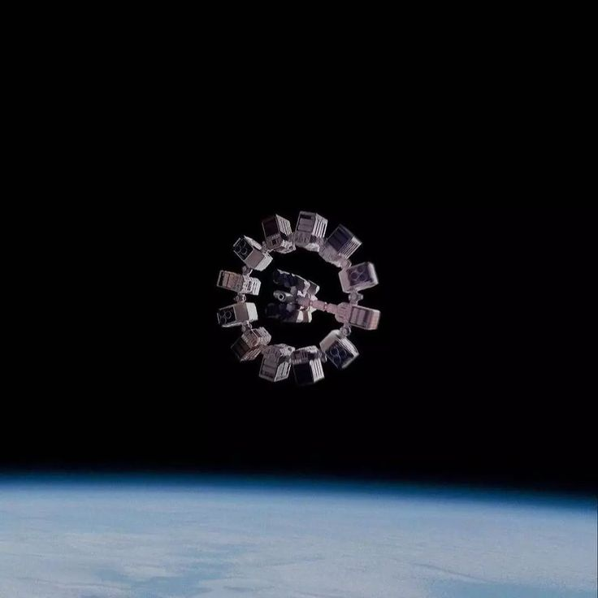
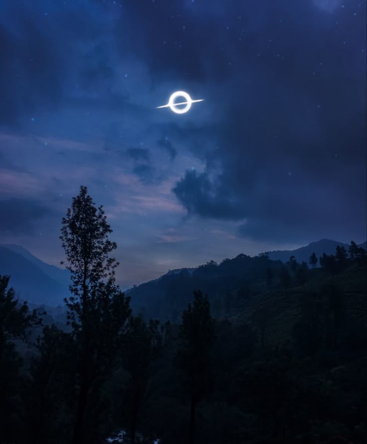

- Az egyik rejtélyes készítő:
 A kezdet: A készítő születésekor a levegőben érezni lehetett valami furcsát. A kisváros, ahol világra jött, egy elhagyott hegyek közé szorított, ködös hely volt, ahol az égbolt sosem volt tiszta, és a fák lombjai suttogó titkokat meséltek a szélnek.
Aznap este a hold vörösbe burkolózott, mintha a világ figyelmeztetést kapott volna.
Kisgyerekként sosem sírt. Miközben az orvosok rémülten bámultak a csendes, kék szemű gyermekre, az anyja a plafonon lévő pókhálók felé meredt, mintha látott volna valamit, amit más nem.
A családja furcsa szokásokat követett.
Az apja minden reggel pontosan 4:17-kor kelt fel, hogy egy különös helyi madár énekét hallgassa, amit senki más nem hallott a városban.
Az anyja sosem beszélt a múltjáról, még a saját szüleiről sem, és gyakran elfelejtett emberi dolgokat, mint például reggelit készíteni vagy becsukni az ajtót.
Gyerekkora olyan volt, mintha egy álom és egy rémálom határán lebegne.
A kezdet: A készítő születésekor a levegőben érezni lehetett valami furcsát. A kisváros, ahol világra jött, egy elhagyott hegyek közé szorított, ködös hely volt, ahol az égbolt sosem volt tiszta, és a fák lombjai suttogó titkokat meséltek a szélnek.
Aznap este a hold vörösbe burkolózott, mintha a világ figyelmeztetést kapott volna.
Kisgyerekként sosem sírt. Miközben az orvosok rémülten bámultak a csendes, kék szemű gyermekre, az anyja a plafonon lévő pókhálók felé meredt, mintha látott volna valamit, amit más nem.
A családja furcsa szokásokat követett.
Az apja minden reggel pontosan 4:17-kor kelt fel, hogy egy különös helyi madár énekét hallgassa, amit senki más nem hallott a városban.
Az anyja sosem beszélt a múltjáról, még a saját szüleiről sem, és gyakran elfelejtett emberi dolgokat, mint például reggelit készíteni vagy becsukni az ajtót.
Gyerekkora olyan volt, mintha egy álom és egy rémálom határán lebegne.
Valahol félúton: Gyerekkorában különleges volt. A barátai azt mondták, hogy gyakran elbámult a távolba, mintha az idő nem érintené.
Amikor beszélt, gyakran olyan dolgokról mesélt, amik senki más számára nem voltak valóságosak: egy vörös szobáról, ahol a bútorok suttogtak, vagy a hegyek közötti erdőről, amely éjszakánként énekelt neki.
Az iskola nem tudott mit kezdeni vele. A tanárok egyszerre tartottak tőle és csodálták az elméjét.
Gyorsan tanult, és minden órán furcsa kérdéseket tett fel, amelyek olyan mélységeket érintettek, amiket senki sem értett.

Egy nagyvárosi egyetemre került, ahol végre úgy érezte, hogy körülötte minden egyszerűbb lett, mégis valami mélyebb, sötétebb vonzotta vissza a gyökereihez. Az órákon ragyogott, de az estéket mindig egy furcsa napló írásával töltötte, amelyben az álmait rögzítette: álmodott egy óriásról, aki a hegyek fölött állt, és egy baglyot, amely az emberek szemében nézett helyette. Az egyik tanára felfigyelt a különleges gondolataira, és megkérdezte, honnan jönnek ezek a képek. Csak annyit mondott: „Mindig is bennem voltak.” Az egyetemen találkozott emberekkel, akik éppúgy meg voltak győződve arról, hogy az élet egy sötét és rejtélyes színház, mint ő maga. Belépett egy színjátszó körbe, amely éjszakai előadásokat tartott egy öreg, elhagyatott színházban. Az egyik estén, amikor mindenki hazament, bent maradt. A színpadon állt, és hirtelen a fák susogása hallatszott, mintha a hegyek visszakérnék őt maguk közé.
Az ismertlen jövő: Jövője egyszerre volt nyitott és zárt. Ő maga sem tudta, hogy egy nap a saját történetévé válik-e, vagy valaki más meséli tovább az életét. Az biztos volt, hogy nem marad a városban, ahol az egyetemet végezte. Valami húzta vissza őt a hegyekbe, ahol a hold vörös színét újra látni vélte, és ahol egy nap talán megtudhatja, ki is ő valójában. Története talán véget ér, vagy talán sosem kezdődött el igazán valaki, aki mindig is a világ szélén táncolt.


- A másik rejtélyes készítő:
 A kezdet: Egy távoli jövőben, amikor az emberiség már rég meghódította a csillagokat, egy fiú született egy mély űrben lebegő űrvárosban, amit a galaxis legszélsőbb peremén hoztak létre. A fiú világrajövetelének pillanatában a közeli csillag erős napkitörése fénypászmákkal töltötte meg a város horizontját, amit az ott élők különleges jelképnek tartottak.
Gyerekkor: Gyermekévei nem egy hagyományos bolygón, hanem egy állandóan mozgó űrállomáson teltek el, ahol minden nap más csillagképek kísérték álmait. Az apja csillagász és asztrofizikus volt, míg az anyja egy időkutatással foglalkozó tudós. Gyermekkorában gyakran hallotta szüleit arról beszélni, hogy az idő nem lineáris, és hogy egyes csillagrendszerek közelében az idő másként áramlik. Ahogy felnőtt, egyre nagyobb érdeklődést mutatott a gravitációs anomáliák és az időtorzulások iránt. Tizenkét évesen részt vett egy expedíción, ahol egy fekete lyuk közelébe utaztak. Ott először érezte igazán, hogy az idő kézzelfoghatóvá válik: míg az űrhajón csupán néhány óra telt el, az anyahajón töltött idő napokra nyúlt.
A felnőttkor szélén:Tizenhat évesen egy másik kihívással is szembe kellett néznie. A családjától távol kellett tanulnia egy bolygón, ahol a gravitáció háromszorosa volt a Földének. Fizikailag és mentálisan is alkalmazkodnia kellett ehhez a környezethez, de hamarosan kiderült, hogy ez az extrém kihívás megerősítette őt. Amikor elérkezett az egyetemi évek ideje, beiratkozott az Emberiség Asztrofizikai Akadémiájára, amely az egyik legnevesebb intézmény volt a galaxis közepén található Központi Csillagállomáson. Az Akadémián nemcsak az idő és tér tudományát tanulta, hanem megértette, hogy az emberi kapcsolatok és álmok is részei az univerzum titkainak. Az egyetemi évek alatt számos kihívással szembesült: egy tanulmányi út során közel kerültek egy szupernóva robbanáshoz, egy másik alkalommal pedig részt vett egy féregjárat stabilizációs projektben, ami új utakat nyitott az emberiség számára a galaxis távoli részei felé. Az egyetemi évek végére nemcsak tudós lett, hanem az emberiség reménysége is. Az idő és tér határainak kutatása közben rájött, hogy a legfontosabb az, hogyan használja tudását mások segítésére. Bár az idő relatív, megtanulta, hogy az érzelmek és álmok mindenen átívelnek, és az univerzum legmélyebb titkait is képesek megvilágítani.
Ismertlen jövő:Legnagyobb eredménye az „időkapu” megalkotása volt, amely nemcsak összekötötte a galaxis távoli pontjait, hanem tanulást és fejlődést tett lehetővé az emberiség számára. Története példaként szolgált a következő generációknak, inspirálva mindenkit, aki a csillagokat célozta meg.
   